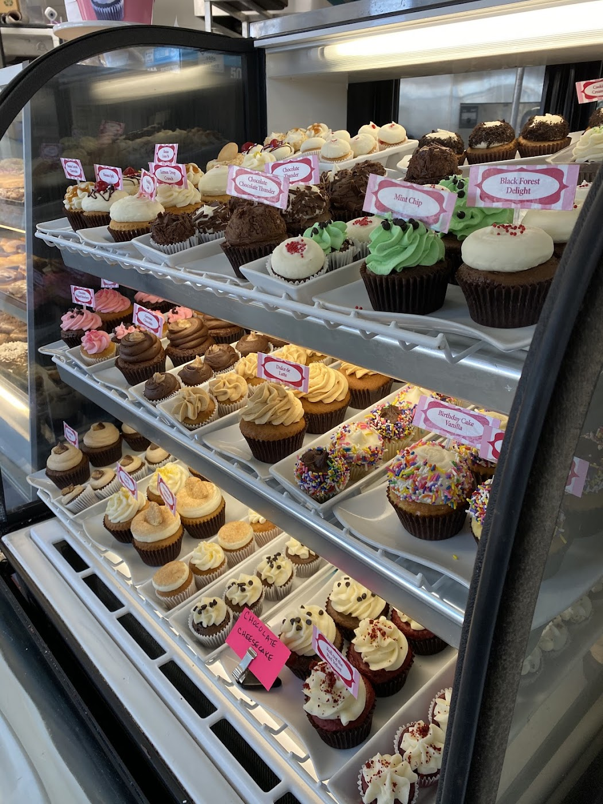
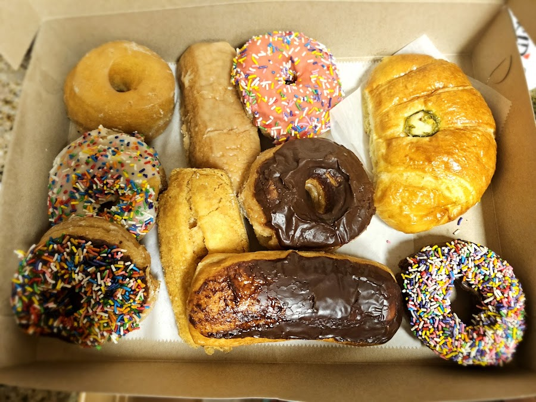
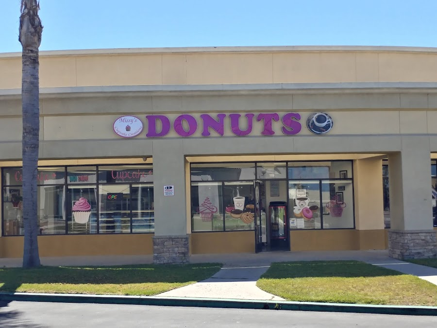
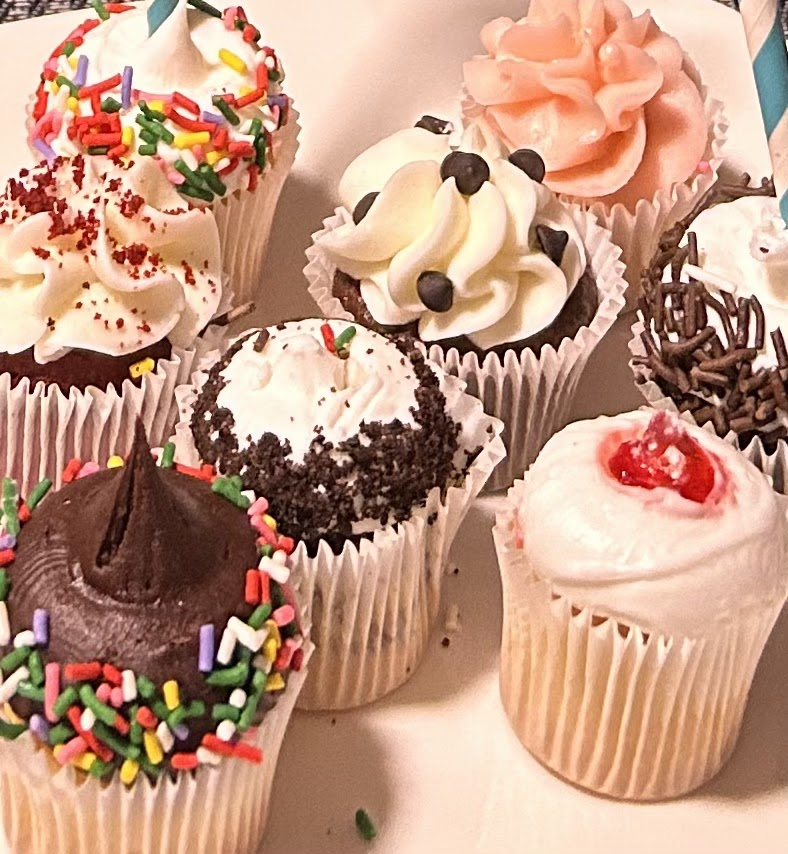
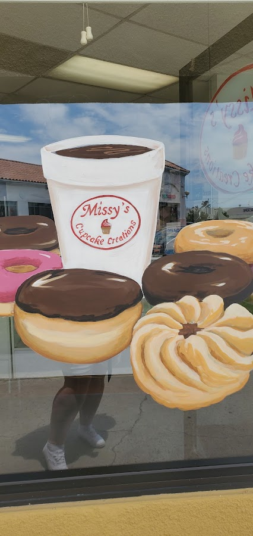
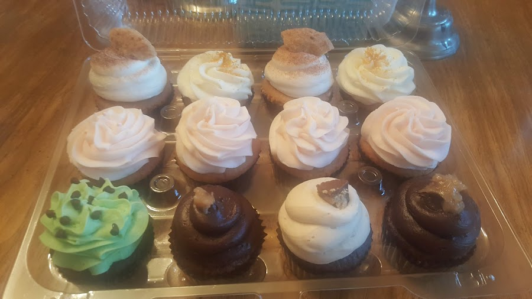

Ventura, CA — Handmade with Care
Custom-made cupcakes, fresh donuts, and croissant sandwiches crafted daily in Ventura. Pre-orders welcome — every bite made to order.
Call to OrderOur Story
Missy's Cupcake Creations is a cozy, welcoming bakery in Ventura where everything is made from scratch. From beautifully decorated birthday cupcakes to flaky croissant sandwiches and fresh daily donuts — this is a neighborhood bakery that puts quality and care into every order. Pre-orders are accepted and ready on time, every time.
Find us at the Johnson Drive location Tuesday through Saturday. Stop in, grab a coffee, and discover why locals keep coming back.



In Their Words
"My son's birthday was made extra special thanks to these delicious cupcakes. Each one was carefully homemade, and you can truly taste the quality and care put into them. The decorations were also incredibly cute and beautifully done."
— Akiko P.
"What really shines was the croissant sandwich — that was spectacular! The lady behind the counter was super nice and friendly, even gave me a cup of coffee to go!"
— SJ
"The owner is delightful and the cupcake flavors are astounding. I ordered four mini cupcakes so I could try different flavors. I highly recommend."
— P J.
"Missy's always has the most delicious donuts and cupcakes. She will take pre-orders, it's ready on time and reasonably priced. It's a nice, cozy place and is welcoming. We love Missy's Cupcake Creations!"
— Karilyn S.
Ready to place a pre-order or just stop in?
Call (805) 382-4852Find Us
Hours of Operation
| Monday | Closed |
| Tuesday | 6:30 AM – 5:30 PM |
| Wednesday | 6:30 AM – 5:30 PM |
| Thursday | 6:30 AM – 5:30 PM |
| Friday | 7:00 AM – 3:00 PM |
| Saturday | 7:00 AM – 3:00 PM |
| Sunday | Closed |
2950 Johnson Dr #119
Ventura, CA 93003

